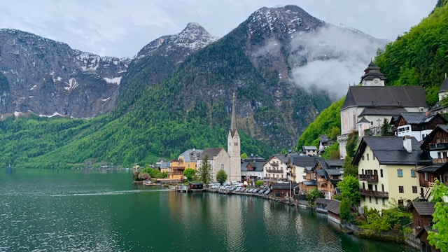
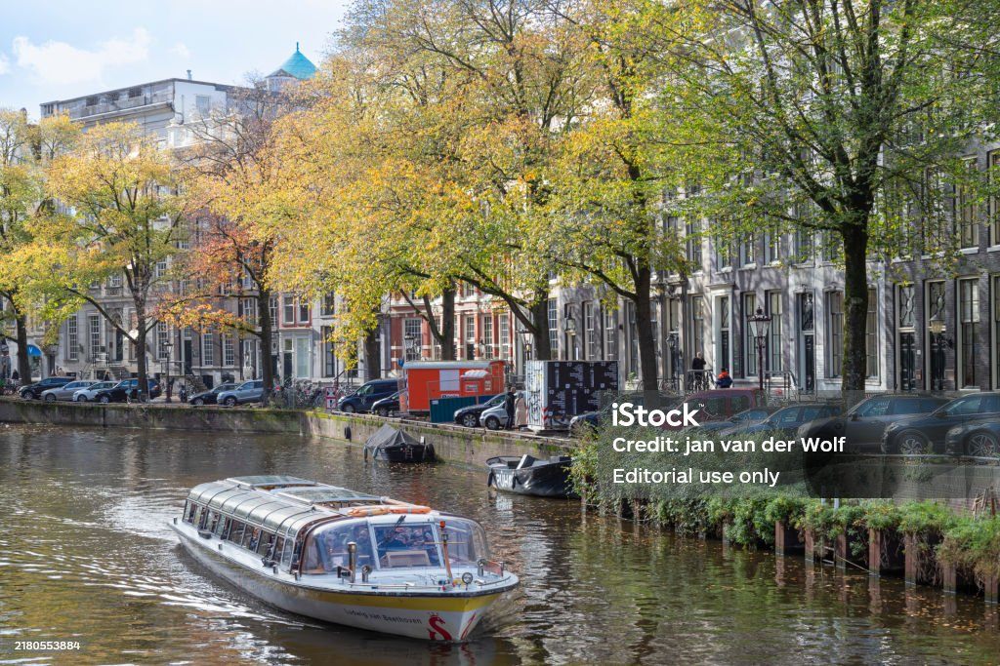
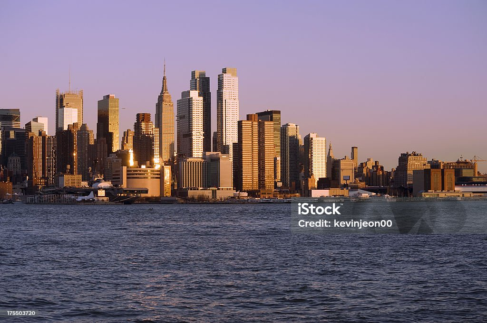
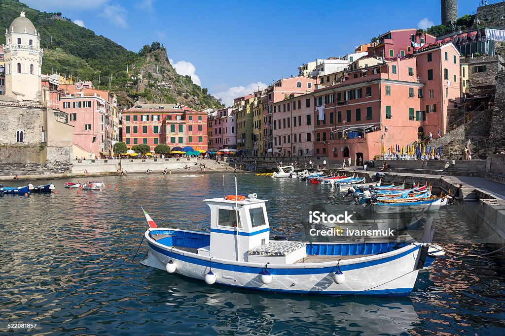
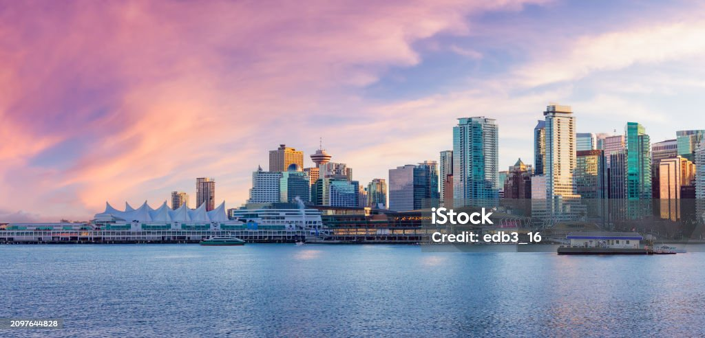
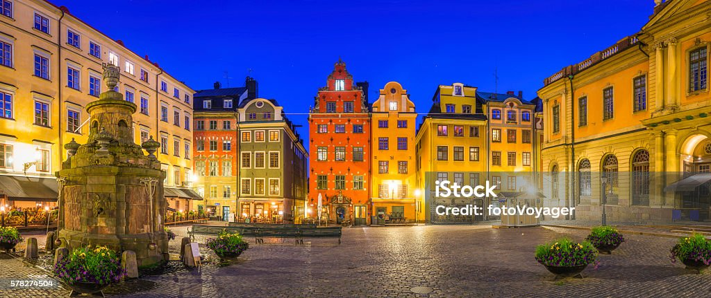
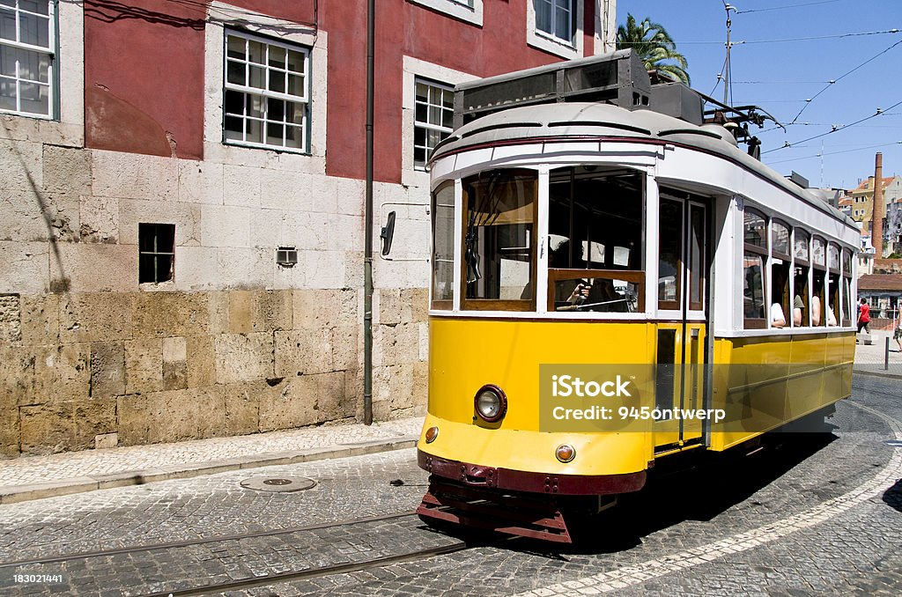
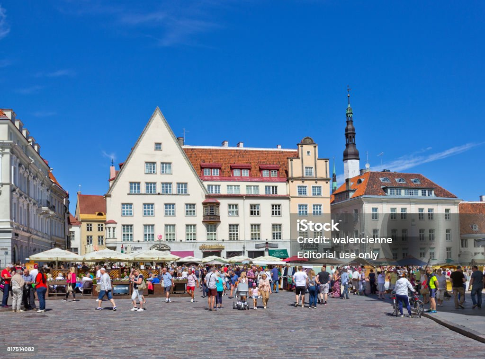
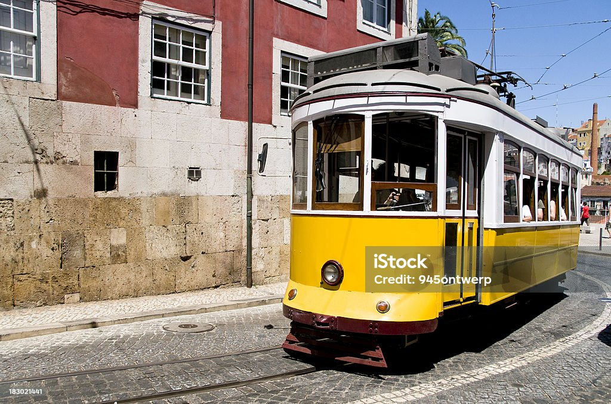
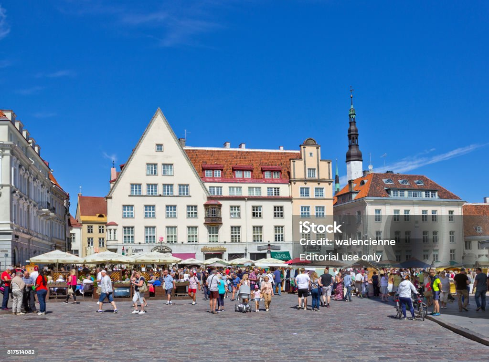

Cities & Landscapes

City 1 (relative positioning)

City 2 (absolute positioning)

City 3 (sticky positioning)

City 4 (static positioning)
City 5 (iframe-box)

City 6 (z-1)

City 7 (z-0)
 City 8 (z-1)

City 9 (z-2)

City 10 (z-3)
City 8 (z-1)

City 9 (z-2)

City 10 (z-3)
Which one was your favorite? They are all nice, I know.
Emerging Favorites: Helsinki, Lisbon, Tallinn